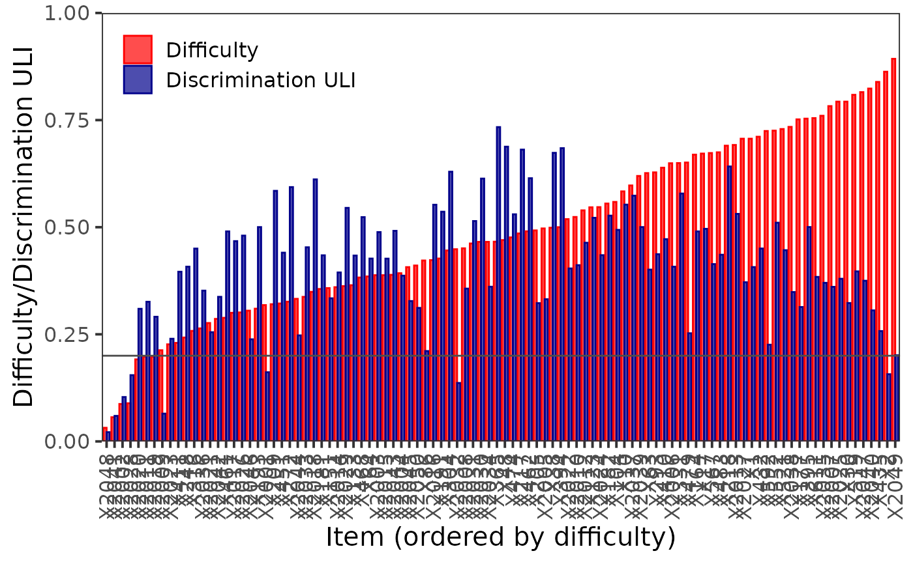

Plots difficulty and (generalized) discrimination or criterion validity for items of the multi-item measurement test using the ggplot2 package. Difficulty and discrimination/validity indices are plotted for each item, items are ordered by their difficulty.
Usage
DDplot(
Data,
item.names,
discrim = "ULI",
k = 3,
l = 1,
u = 3,
maxscore,
minscore,
bin = FALSE,
cutscore,
average.score = FALSE,
thr = 0.2,
criterion = "none",
val_type = "simple",
data
)Arguments
- Data
numeric: binary or ordinal data
matrixordata.framewhich rows represent examinee answers (1correct,0incorrect, or ordinal item scores) and columns correspond to the items.- item.names
character: the names of items. If not specified, the names of
Datacolumns are used.- discrim
character: type of discrimination index to be calculated. Possible values are
"ULI"(default),"RIT","RIR", and"none". See Details.- k
numeric: number of groups to which data may be divided by the total score to estimate discrimination using
discrim = "ULI". Default value is 3. See Details.- l
numeric: lower group. Default value is 1. See Details.
- u
numeric: upper group. Default value is 3. See Details.
- maxscore
numeric: maximal scores of items. If single number is provided, the same maximal score is used for all items. If missing, vector of achieved maximal scores is calculated and used in calculations.
- minscore
numeric: minimal scores of items. If single number is provided, the same maximal score is used for all items. If missing, vector of achieved maximal scores is calculated and used in calculations.
- bin
logical: should the ordinal data be binarized? Default value is
FALSE. In case thatbin = TRUE, all values ofDataequal or greater thancutscoreare marked as1and all values lower thancutscoreare marked as0.- cutscore
numeric: cut-score used to binarize
Data. If numeric, the same cut-score is used for all items. If missing, vector of maximal scores is used in calculations.- average.score
logical: should average score of the item be displayed instead of difficulty? Default value is
FALSE. See Details.- thr
numeric: value of discrimination threshold. Default value is 0.2. With
thr = NULL, no horizontal line is displayed in the plot.- criterion
numeric or logical vector: values of criterion. If supplied,
disrimargument is ignored and item-criterion correlation (validity) is displayed instead. Default value is"none".- val_type
character: criterion validity measure. Possible values are
"simple"(correlation between item score and validity criterion; default) and"index"(item validity index calculated ascor(item, criterion) * sqrt(((N - 1) / N) * var(item)), where N is number of respondents, see Allen & Yen, 1979, Ch. 6.4, for details). The argument is ignored if user does not supply anycriterion.- data
deprecated. Use argument
Datainstead.
Details
Discrimination is calculated using method specified in discrim. Default
option "ULI" calculates difference in ratio of correct answers in upper and
lower third of students. "RIT" index calculates correlation between item
score and test total score. "RIR" index calculates correlation between item
score and total score for the rest of the items. With option "none", only
difficulty is displayed.
"ULI" index can be generalized using arguments k, l and u.
Generalized ULI discrimination is then computed as follows: The function
takes data on individuals, computes their total test score and then divides
individuals into k groups. The lower and upper group are determined by l
and u parameters, i.e. l-th and u-th group where the ordering is defined
by increasing total score.
For ordinal data, difficulty is defined as a relative score:
Minimal score can be specified by
minscore, maximal score can be specified by maxscore. Average score of
items can be displayed with argument average.score = TRUE. Note that for
binary data difficulty estimate is the same as average score of the item.
Note that all correlations are estimated using Pearson correlation coefficient.
References
Allen, M. J., & Yen, W. M. (1979). Introduction to measurement theory. Monterey, CA: Brooks/Cole.
Martinkova, P., Stepanek, L., Drabinova, A., Houdek, J., Vejrazka, M., & Stuka, C. (2017). Semi-real-time analyses of item characteristics for medical school admission tests. In: Proceedings of the 2017 Federated Conference on Computer Science and Information Systems.
See also
gDiscrim() for calculation of generalized ULI ggplot2::ggplot() for general function to plot a "ggplot" object
Author
Adela Hladka
Institute of Computer Science of the Czech Academy of Sciences
hladka@cs.cas.cz
Lubomir Stepanek
Charles University
Jana Vorlickova
Institute of Computer Science of the Czech Academy of Sciences
Patricia Martinkova
Institute of Computer Science of the Czech Academy of Sciences
martinkova@cs.cas.cz
Examples
# binary dataset
dataBin <- dataMedical[, 1:100]
# ordinal dataset
dataOrd <- dataMedicalgraded[, 1:100]
# DDplot of binary dataset
DDplot(dataBin)

if (FALSE) { # \dontrun{
# DDplot of binary dataset without threshold
DDplot(dataBin, thr = NULL)
# compared to DDplot using ordinal dataset and 'bin = TRUE'
DDplot(dataOrd, bin = TRUE)
# compared to binarized dataset using bin = TRUE and cut-score equal to 3
DDplot(dataOrd, bin = TRUE, cutscore = 3)
# DDplot of binary data using generalized ULI
# discrimination based on 5 groups, comparing 4th and 5th
# threshold lowered to 0.1
DDplot(dataBin, k = 5, l = 4, u = 5, thr = 0.1)
# DDplot of ordinal dataset using ULI
DDplot(dataOrd)
# DDplot of ordinal dataset using generalized ULI
# discrimination based on 5 groups, comparing 4th and 5th
# threshold lowered to 0.1
DDplot(dataOrd, k = 5, l = 4, u = 5, thr = 0.1)
# DDplot of ordinal dataset using RIT
DDplot(dataOrd, discrim = "RIT")
# DDplot of ordinal dataset using RIR
DDplot(dataOrd, discrim = "RIR")
# DDplot of ordinal dataset displaying only difficulty
DDplot(dataBin, discrim = "none")
# DDplot of ordinal dataset displaying difficulty estimates
DDplot(dataOrd)
# DDplot of ordinal dataset displaying average item scores
DDplot(dataOrd, average.score = TRUE)
# item difficulty / criterion validity plot for data with criterion
data(GMAT, package = "difNLR")
DDplot(GMAT[, 1:20], criterion = GMAT$criterion, val_type = "simple")
} # }